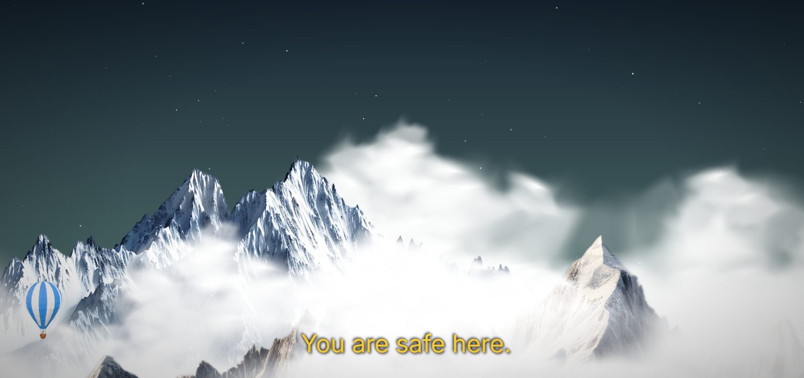
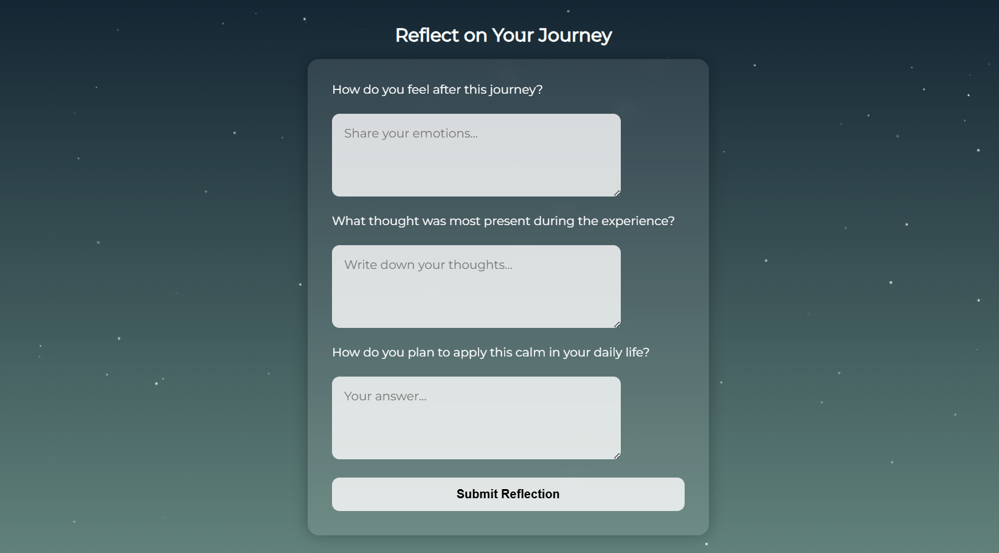

☰
Home
Start the journey
Ponder
Welcome to a journey of calm and meditation.
Relax, breathe and Select where you would like to go.

Start the journey

Ponder
Your browser does not support HTML5 audio.